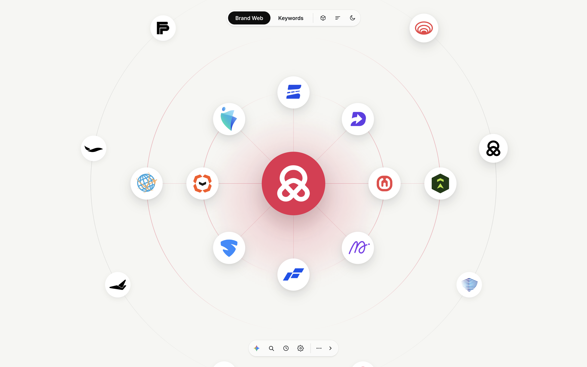
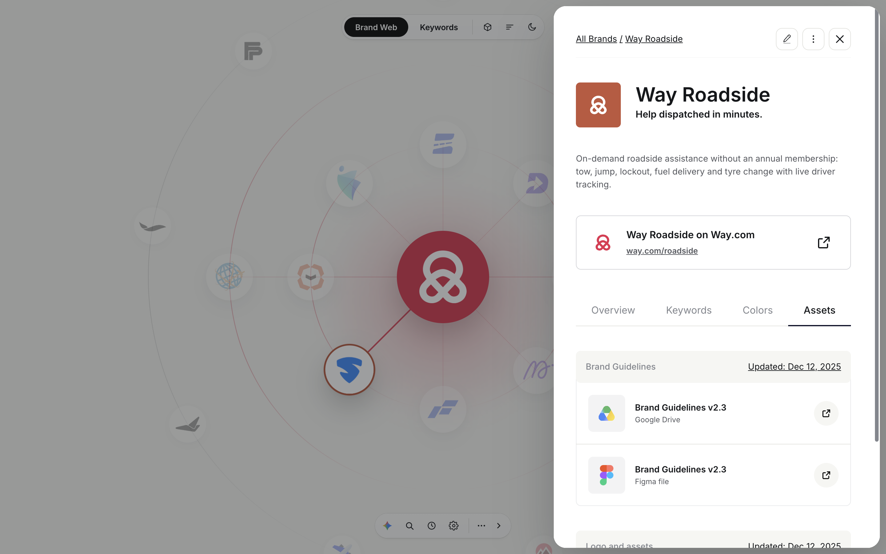
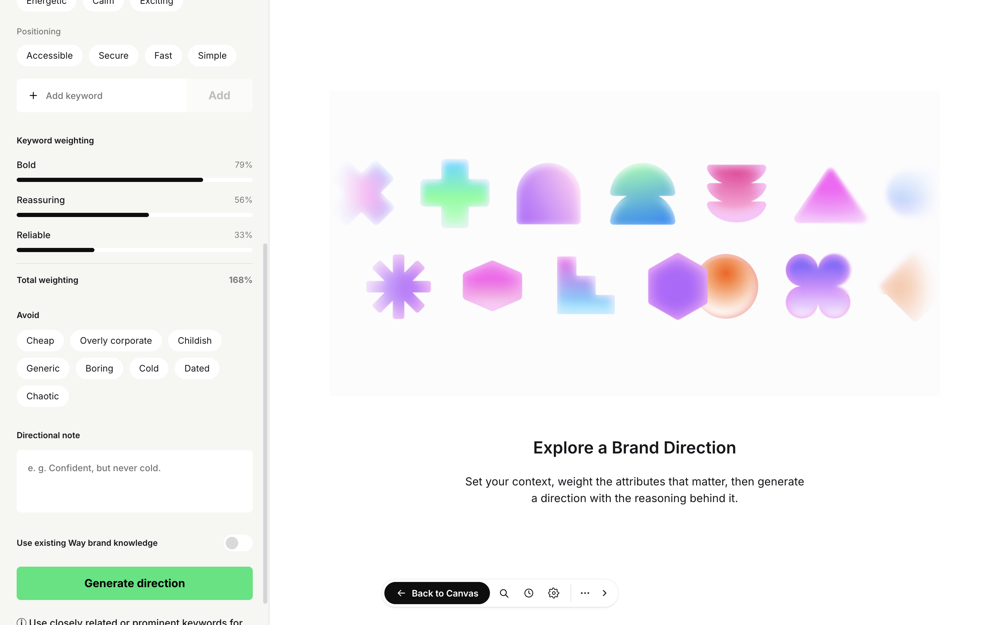

A centralized platform for understanding, discovering, and working with all the brands, products and solutions within an organization. It brings together brands, their relationships, brand information, guidelines, assets and visual references into one accessible place.
On top of this repository sits an AI-powered moodboard generator that helps teams make brand and design decisions based on the personality and characteristics of each brand.
As an organization grows it accumulates brands, products, sub-brands, microsites, campaigns, assets and guidelines. Over time that information scatters across Figma files, folders, documents, drives, websites and individual teams, which makes simple questions hard to answer.
What brands do we have? How are they related? Who owns them? Where can I find their assets? Who should I contact? What are the brand guidelines?
Each brand gets a dedicated space holding the information people actually ask for. Instead of searching through multiple places, everyone starts here.
Brands are shown in relation to each other rather than as isolated entities: parent brand at the centre, product brands, service brands and microsites around it. A visual map that answers "what exists, and how does everything connect?"
One piece of brand information sits in Figma, another in a PDF, another in Drive, another only in a particular designer's head. The platform does not replace those tools. It becomes the single access point to what already exists.
Search a brand and find its information, assets and contacts. No more confusion about what a brand is, where the guideline lives, who owns it, or who to reach out to.
A new employee can explore the platform instead of learning the brand ecosystem through scattered documents and conversations.


The repository is the foundation, but once the platform knows each brand's personality, keywords, tone and visual identity, it can help with new decisions. A brand defined as Trustworthy, Modern, Energetic, Approachable gives the generator enough to explore colors, typography, imagery, graphic styles, patterns and overall art direction around it.
It is not only for building an identity from scratch. It supports everyday decisions:

Designers start from a direction already connected to the brand's personality rather than a blank canvas, and everyone works from the same reference instead of their own interpretation. It is no longer guesswork or personal choice: the directions are grounded in color theory, psychology and the mental models people already carry about how a brand should feel.
Brand awareness
Understand the complete brand landscape and how brands relate to each other.
Centralized access
Scattered information, assets, guidelines and resources in one place.
Easy discovery
Find brands, assets, information and the right contact quickly.
Less dependency on individuals
Brand knowledge stops living only with one person or team.
Better collaboration
Designers, marketers, product teams and stakeholders share one source.
Faster, more consistent decisions
Personality and established characteristics become the basis for design choices.
Single source of truth
One authoritative record per brand, so teams stop working from outdated or conflicting versions.
A single source of truth for the organization's brand ecosystem, where anyone can discover a brand, understand it, find its resources, read its personality, explore its visual direction and make an informed design decision. Brand information stops being scattered documents and becomes a connected, usable system.
In one line
A centralized brand ecosystem and intelligence platform that helps people discover, understand and work with the organization's brands, while using brand personality and keywords to guide visual and design decisions.